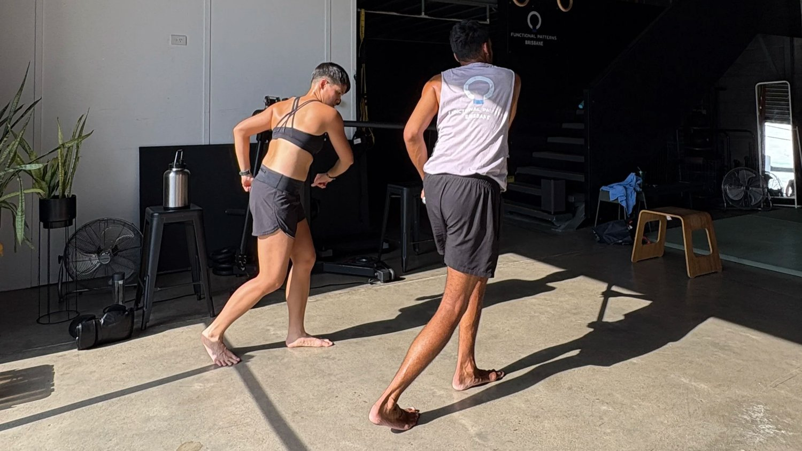

If you’ve been diagnosed with gluteal tendinopathy, you’ve probably gone down the same path most people do.
You start googling:
-
gluteus medius pain
-
glute exercises gym
-
stretches for gluteus medius
And you end up doing band walks, clamshells, and side leg raises… hoping something finally clicks.
Sometimes it helps.
But more often?
It plateaus. Or it flares back up the second you walk more, train harder, or lie on your side at night.
That’s the frustrating part.
Because it makes it feel like:
👉 your glutes are weak
👉 your body is fragile
👉 you just haven’t “done enough rehab yet”
But if you zoom out for a second, that explanation doesn’t hold up.
If your glutes were simply weak…
why are they constantly tight, overworked, and painful?
That’s not weakness.
That’s overload.
And overload doesn’t come from one muscle failing—it comes from a system not sharing the work properly.
What is Gluteal Tendinopathy?
At face value, gluteal tendinopathy refers to irritation or degeneration of the tendon where your glute muscles—primarily the gluteus medius—attach to your hip.
That tendon is meant to:
-
stabilise your pelvis when you walk
-
control your hip as your body moves over your leg
-
absorb and release force with each step
When it gets irritated, you feel:
-
a deep ache on the outside of your hip
-
pain walking, standing, or lying on one side
-
reduced tolerance to load
That’s the textbook definition.
But here’s what’s missing:
👉 Tendons don’t just “randomly wear out.”
👉 They fail when load exceeds what they can tolerate—repeatedly.
So the real question isn’t:
“What is gluteal tendinopathy?”
It’s:
“Why is that tendon being overloaded in the first place?”
Anatomy of the Gluteus Medius (and Why It’s Misunderstood)
The gluteus medius muscle sits on the outside of your hip and is often described as a “hip stabiliser.”
That’s true—but incomplete.
It doesn’t just stabilise.
It’s part of a timing system that coordinates:
-
pelvis position
-
femur movement
-
trunk rotation
-
and how your body moves through space
When everything is working well:
-
it turns on briefly
-
helps control load
-
then turns off
When things aren’t working well:
-
it stays on too long
-
takes on too much responsibility
-
becomes irritated over time
This is where most rehab goes wrong.
Because people are told to:
👉 strengthen it
👉 activate it
👉 train it more
When in reality…
👉 it’s already doing too much.
Causes of Gluteal Tendinopathy
Let’s go through the common explanations—and then what’s actually happening underneath them.

“Overuse and Repetitive Strain”
You’ll see this everywhere.
But “overuse” is vague.
What it actually means is:
👉 you’re repeating a movement pattern that distributes load poorly
For example:
-
walking without proper rotation
-
standing with your hip pushed out to one side
-
training in ways that bias the lateral hip constantly
So it’s not that you’re doing too much.
It’s that:
👉 you’re doing the same inefficient pattern thousands of times per day
“Trauma or Injury”
A fall or sudden load can trigger symptoms.
But here’s what’s usually true:
👉 the tendon was already being overloaded before the injury
The injury didn’t create the problem—it exposed it.
Poor Biomechanics (This Is the Big One)
This is where things actually start to make sense.
If your body:
-
doesn’t rotate well
-
doesn’t transfer load efficiently
-
doesn’t alternate sides properly during gait
Then your gluteus medius becomes a constant stabiliser instead of a dynamic controller.
Think about that.
Instead of:
- loading → releasing → loading → releasing
It becomes:
- holding → holding → holding
That constant tension is what irritates the tendon.
And no amount of glute stretching exercises fixes a system that’s fundamentally mis-coordinated.
Symptoms of Gluteal Tendinopathy
Localized Pain
This is the classic presentation:
-
pain on the outside of the hip
-
tenderness over the gluteus medius tendon
-
discomfort when pressing the area
Pain During Movement
You’ll notice it more when:
-
walking longer distances
-
climbing stairs
-
standing on one leg
Which makes sense.
Because these are the moments where your body needs to:
👉 transfer load efficiently
If it can’t…
👉 the tendon absorbs the stress instead
Night Pain
One of the biggest complaints.
Lying on your side compresses the tendon.
If it’s already overloaded:
→ that compression becomes painful
But again—this is the symptom.
Not the cause.'
Diagnosis of Gluteal Tendinopathy
Physical Examination
Most practitioners will:
-
press on the tendon
-
test strength
-
look at basic movement
This can confirm the diagnosis.
But it often misses:
👉 why the tendon is overloaded in the first place
Imaging
Scans might show:
-
degeneration
-
thickening
-
partial tearing
But here’s the key distinction:
👉 Imaging shows tissue condition
👉 It does NOT show movement dysfunction
You can improve a scan and still have pain.
You can also have a bad-looking scan and no pain.
Treatment Options for Gluteal Tendinopathy (and Why They Often Fall Short)
Rest and Activity Modification
This can calm things down.
But if your movement stays the same:
→ symptoms return as soon as load increases
Physical Therapy and Glute Exercises
This is where most people get stuck.
You’re told to:
-
do clamshells
-
band walks
-
side-lying leg lifts
These fall under:
👉 glute exercises gym-style rehab
The issue?
They often:
-
isolate the glutes
-
reinforce lateral tension
-
ignore how the body moves as a whole
So you end up:
👉 stronger in the same dysfunctional pattern
Medication and Injections
They reduce pain.
They don’t change:
👉 load distribution
👉 movement patterns
Which is why recurrence is common.
Surgery
Reserved for severe cases like:
-
gluteus medius rupture
-
major tendon damage
But even then:
👉 if movement isn’t addressed, outcomes are limited
What Actually Works (And Why It’s Different)
This is where the shift happens.
To properly resolve gluteal tendinopathy, you don’t just treat the tendon.
You change how your body handles force.
1. Rebuild How You Walk
Walking is your most repeated movement.
If your gait lacks:
-
rotation
-
reciprocal arm swing
-
proper loading into each leg
Then your lateral hip will keep overworking.
Fixing gait often changes symptoms faster than isolated exercises ever do.
2. Restore Rotation
Your body is designed to rotate.
When it doesn’t:
→ muscles like the gluteus medius pick up the slack
Reintroducing rotation allows:
👉 load to be shared again
3. Stop Over-Activating Your Glutes
This is counterintuitive.
But most people with gluteus medius pain:
👉 are already overusing their glutes
Adding more activation drills often:
→ increases compression on the tendon
4. Improve Load Transfer
Your body should:
-
accept load
-
move through it
-
release it
If it gets stuck in any phase:
→ one structure absorbs the stress
That’s what’s happening here.
5. Train Coordination, Not Just Strength
Strength is useless without timing.
The goal isn’t:
👉 stronger glutes
It’s:
👉 better-coordinated movement
Prevention (What Actually Keeps It Away)
Stretching and Strengthening
Helpful—but only if integrated into movement.
Otherwise:
→ temporary relief
Warm-Ups
A good warm-up should:
-
prepare rotation
-
prepare load transfer
Not just “switch muscles on”
Daily Habits
Watch for:
-
leaning into one hip when standing
-
sitting asymmetrically
-
walking stiffly without arm swing
These are the patterns that recreate the problem.
Conclusion
Gluteal tendinopathy isn’t a glute problem.
It’s a load distribution problem.
Your gluteus medius isn’t weak—it’s being asked to do more than it should, because the rest of the system isn’t contributing properly.
Until that changes:
→ the cycle continues
If you’ve been doing all the right rehab— glute workouts, stretching, strengthening—and still have pain, the issue likely hasn’t been properly assessed.
At FP Brisbane, we look at how your body moves as a system—so you can actually resolve what’s driving the issue.
👉 Book a posture and gait assessment to get real answers.